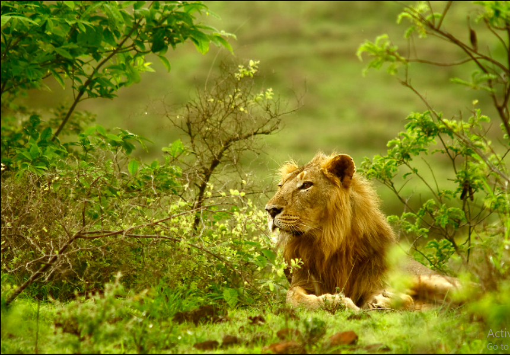
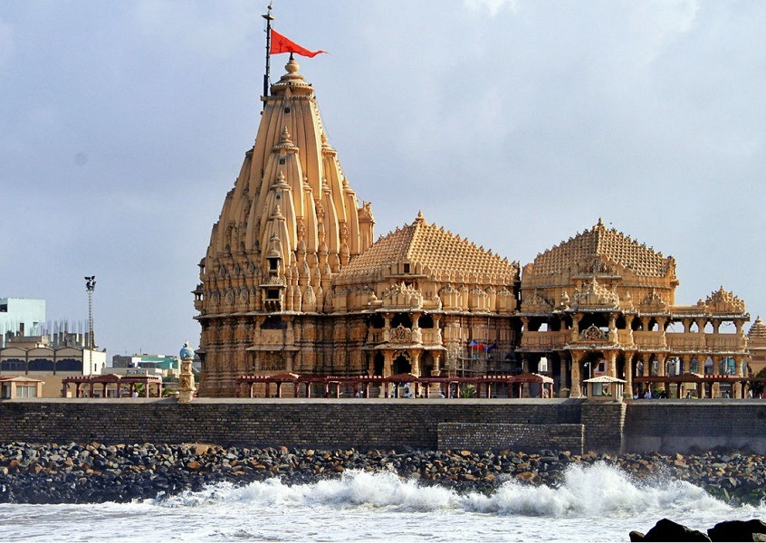
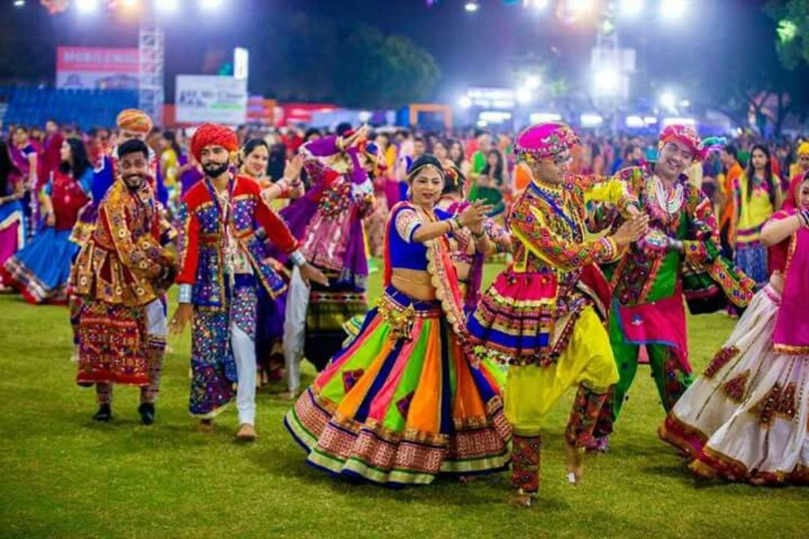
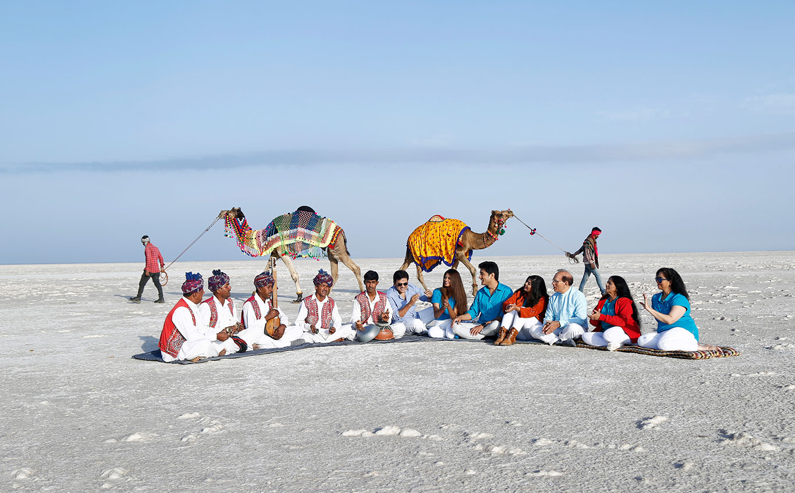

Land of Legends, Lions & Vibrant Culture

The only natural habitat of Asiatic lions. Gir showcases Gujarat's wildlife and forest heritage.

One of the 12 Jyotirlingas, Somnath is a symbol of faith, resilience, and history, attracting thousands of pilgrims.

Gujarat comes alive during Navratri with Garba and Dandiya dance festivals celebrated across cities and villages.

A vast white salt desert famous for the Rann Utsav and traditional handicrafts, reflecting Gujarat’s rich heritage.